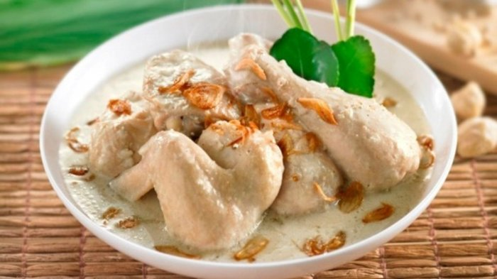

Mendengar kata opor ayam, pasti sudah tidak asing di telinga kita. Pastinya otak kita akan langsung membayangkan suatu makanan yang lezat, dan tentunya membuat perut kita langsung keroncongan kelaparan ingin cepat-cepat memakannya.
Bayangkan gurihnya daging ayam kampung bersama kuah opor yang kental kaya akan rempah, pasti nikmat sekali disantap bersama nasi putih panas atau ketupat.
Namun banyak yang malas memasak opor ayam, karena dianggap sulit dan memakan waktu lama. Dalam artikel kali ini, kami akan memberikan resep opor ayam yang mudah dibuat yang bisa disajikan untk delapan orang.
Bahan Bahan
- 4 sdm minyak untuk menumis
- 2 batang Serai, ambil bagian putihnya, memarkan
- 5 lembar daun jeruk purut
- 3 lembar daun salam
- 2 ekor ayam buras, potong masing-masing menjadi 4 bagian
- 1 1/2 butir kelapa, parut, peras menjadi 250 ml santan kental
- 1 1/2 L santan encer
Bumbu yang dihaluskan:
- 3 sdt ketumbar butiran, sangrai
- 1/2 sdt jintan, sangrai
- 2 sdt merica butiran
- 6 butir kemiri, goreng
- 3 cm kencur
- 3 cm lengkuas
- 100 g bawang merah
- 5 siung bawang putih
- 2 sdt garam
- 2 sdm gula merah sisir
Cara Membuat Opor Ayam Kampung :
- Panaskan minyak, tumis bumbu halus, Serai, daun jeruk, dan daun salam. Aduk-aduk hingga harum.
- Masukkan potongan ayam, aduk-aduk hingga ayam kaku.
- Masukkan santan encer, masak terus di atas api sedang hingga mendidih dan ayam empuk.
- Tambahkan santan kental, aduk sesekali sampai mendidih. Kecilkan api, masak hingga santan agak berminyak.
- Opor ayam siap disajikan.